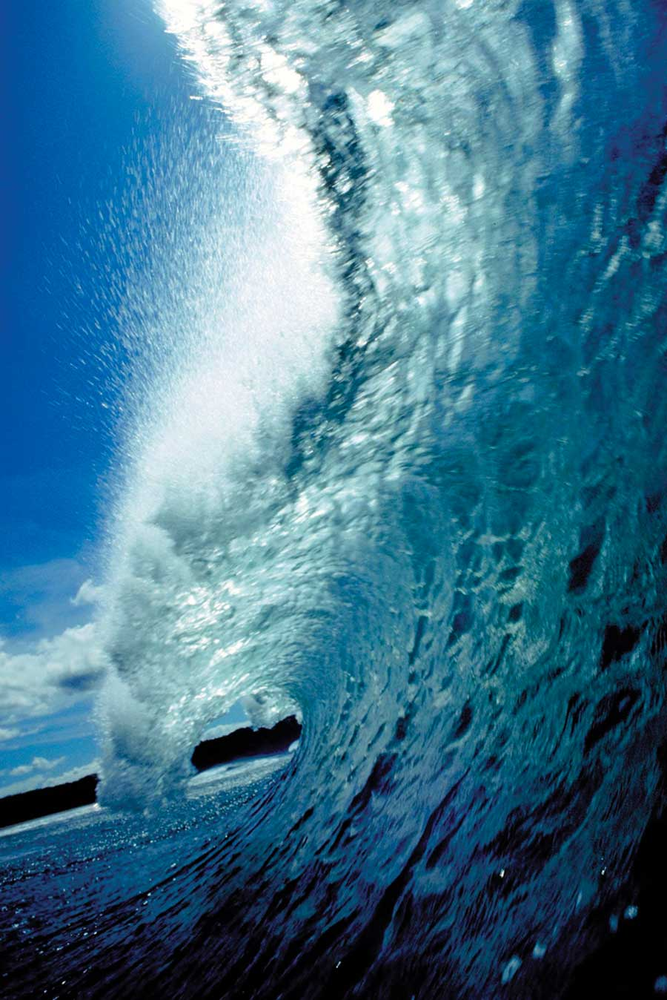

Dreamers, scientists and promoters have talked about the promise of tidal and wave energy for decades, and yet the first serious demonstration projects are only now getting underway. So what took so long?
There are plenty of reasons for delay, including low oil and gas prices throughout the 1990s, the technological challenges presented by the harsh ocean environments in which the devices must operate, and lack of agreement on the best design.
“The challenges have been greater and the timelines have all slipped. It hasn’t been an easy ride so far,” says Andrew Mill, a close observer of ocean energy development as head of the New and Renewable Energy Center in England. “Most of the devices to date haven’t actually reached the water.”
The idea of getting renewable power from the ocean is simple enough. Just as hydroelectric generators capture the energy of falling water, wave and tidal systems seek to capture the energy in moving water, either the up-and-down motion of the waves, or the flow created by rising and falling tides. Pilot projects are being monitored off the coasts of Maine, Florida and Scotland, but none are commercially viable yet.
At least three wave power technologies are being evaluated. One is similar to a floating cylinder that bobs up and down in the waves and generates electricity in a base section anchored to the sea floor. Another contender resembles a chain of semi-submerged tankers pointed into the waves. Electricity is generated by the movement of hydraulic cylinders at the joints between tanks. The third type is like a scoop mounted on the shore. As waves push into the mouth of the device, the displaced air drives a turbine and generator.
Tidal power generators, with large propellers turned by flowing water, are the equivalent of wind turbines in the oceans. Tests have been conducted off the coast of Maine in the Bay of Fundy, where some of the highest tides in the world are found.
The power in the oceans is real, but it is still waiting to be tapped. However, as oil, gas and coal prices rise along with concerns about global warming, it’s likely that the first commercial wave and tidal systems will soon feed electricity to the power grid.
|
 JUPITERIMAGES Can we tap the awesome power of the ocean? |
|
|